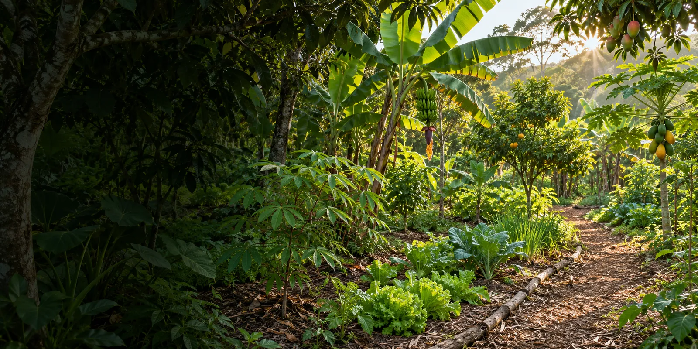
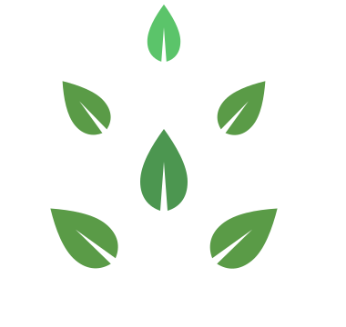

Explore as espécies
Conheça diferentes plantas, seus usos, suas relações e os papéis que podem ter em uma agrofloresta.
Explore espécies, informe as condições do solo e compare propostas educativas de agrofloresta.

Conheça diferentes plantas, seus usos, suas relações e os papéis que podem ter em uma agrofloresta.
Experimente um cenário de exemplo ou informe dados do solo para explorar combinações de plantas.
Compare propostas educativas, entenda as escolhas e acompanhe uma representação das fases de crescimento.
Somos os Jumpers, equipe de robótica do SESI Cotia. Na FIRST LEGO League, unimos pesquisa e tecnologia para aproximar mais pessoas dos sistemas agroflorestais.
O Ybyrá é um convite para aprender sobre plantas que crescem juntas — e sobre as possibilidades que começam no solo.
Conhecer o YbyráAs propostas são educativas e demonstrativas. Não substituem avaliação agronômica ou planejamento de campo.
